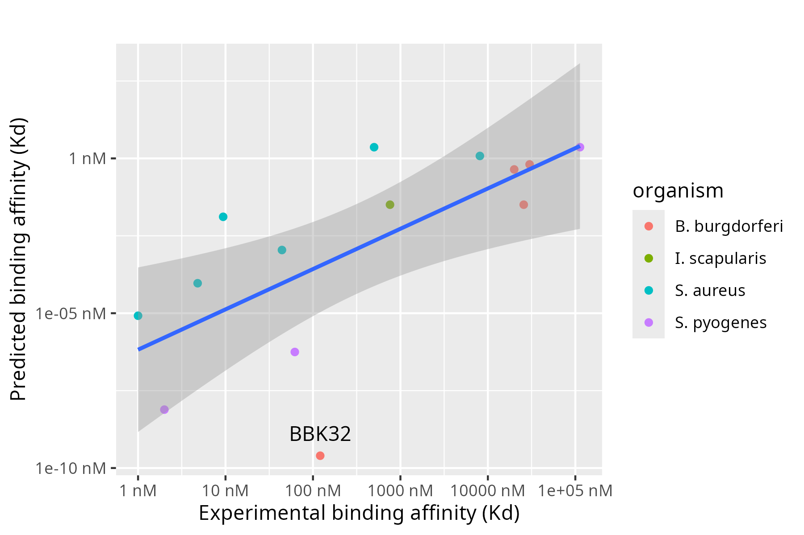

Estimating the binding affinity of the interaction between tandem beta-zippers and fibronectin
This guide is written for project students at undergraduate or MSc level.
The aim is to extract the amino acid sequences for the target proteins, build an Alphafold model of the complex, then submit this to PRODIGY to estimate the binding affinity. We start with an introduction to coordinate files. ## Introduction to coordinate files
Several experimental structures (from NMR and X-ray crystallography) are available of bacterial peptides in complex with fibronectin. The structure files can be downloaded from the Protein Data Bank (PDB). For example, see the “Crystal structure of the second and third fibronectin F1 modules in complex with a fragment of Streptococcus pyogenes SfbI-5”, PDB accession code 3ZRZ. Click on Download Files, then choose either the PDBx/mmCIF Format, or the Legacy PDB Format.
This is a simple text file. Open it in a text editor (e.g. Wordpad) and scroll down to see the 3D coordinates of each atom. You will see this to specify the details for atom 1 of 3ZRZ.pdb
ATOM 1 N GLU A 63 -9.834 -21.054 6.812 1.00 33.20 N Reading across, the columns are:
- atom number (1),
- The element (N = Nitrogen)
- Three letter code for the type of residue (Glu = Glutamic acid)
- Single letter to specify the chain ID (A = Chain A)
- The residue number within that chain (Residue 63)
- Cartesian coordinates x, y, z (-9.834 -21.054 6.812)
- The occupancy - a number between zero to 1 (1.00)
- The B-factor of this atom (33.20)
There are several programs available to visualise coordinate files in this format (PyMOL, VMD, RASMOL), but these will not be covered here.
If you open a coordinate file in PyMOL, your changes (e.g. colouring, deleting atoms etc.) are not automatically saved to the PDB file. The text file will remain unaltered. You can generate a new PDB file using PyMOL using File-Export Molecule, but you should always use a new filename.
There are numerous advantages of using coordinate files from experimental methods such as X-ray crystallography. The primary advantage is the accuracy of the structure - we can have high confidence in the precise spatial arrangement of all atoms in the coordinate file. However, there are some things we need to aware of:
- loop regions may be disordered. The amino acids in these flexible regions are often missing in the coordinate files, therefore there is a break, or gap in the polypeptide.
- Some amino acids may have been modelled in two or more conformations (alternative conformations). Or, part of the side-chain might be missing.
- The coordinate file (the asymmetric unit) may have more than one copy of the molecule of interest. For example, there are six copies of the biological relevant unit in 2RL0. You can visualise these if you colour by chain in PyMOL. There are subtle differences between these six structures.
- The coordinate files will often contain other non-protein components. If you look at 3ZRZ, you will see a glycerol molecule, a sulphate ion and many water molecules. In addition, the bacterial peptide is acetylated at the N-terminus (ACE residue)
To calculate an accurate binding affinity between two molecules, we need accurate coordinate files that include all the amino acids. These missing (or extra) parts will need to be corrected.
One option would be to edit the text file to remove these non-protein atoms, then rebuild and model the missing loops and side-chains. However, in 2021, Alphafold2 was released, which, for the first time made it possible to accurately predict the 3D-structure of a protein based only on the amino acid sequence (Jumper et al., 2021). The accuracy of these protein models has been shown to be excellent, especially where there is a prior structure in the PDB with high sequence identity to the target. Then, in 2024 Alphafold3 was released (Abramson et al., 2024) allowing the accurate prediction of complexes, for example the interaction between two distinct proteins. The Alphafold server is available here. You will need a google account to use it. You will notice from this server that the input is simply an amino acid sequence in one-letter code.
Extracting the amino acid sequences
In order to generate Alphafold models, we need to extract the correct amino acid sequences of the target proteins. In the example, we will find the amino acid sequences that correspond to the interaction between two different bacterial peptides (SfbI and FnBPA1) and the 2nd and 3rd F1 domains of human fibronectin (2F1-5F1).
Staphylococcus aureus Fibronectin-binding Protein A Repeat 1 (FnBPA-1)
FnBPA is a bacterial peptide from Staphylococcus aureus with 11 Fn-binding repeats. The interaction between FnBPA and fibronectin is descibed in Meenan et al, 2007.
Notice from Table 1 in Meenan et al, that FnBPA-1 corresponds to residues 512-550. Go to the uniprot entry for FnBPA P14738, find the amino acids 512-550, and paste them into a text file, as below.
>FnBPA1(512-550)
GPIIQNNKFEYKEDTIKETLTGQYDKNLVTTVEEEYDSSNotice that this is identical to the amino acid sequence for FnBPA1 in Figure 1, part B.
Streptococcal fibronectin-binding protein I (SfbI)
SfbI is bacterial peptide from Streptococcus pyogenes. The intereaction between SfBI and fibronectin is described in Schwarz-Linek et al., (2003). The five repeats of SfBI are numbered 1-5 (top of Figure 3). In this example, we are interested in the interaction between 2F1-3F1 and repeat number 5. On Figure 3 you can see that the researchers have measured the binding affinity for 3 fragments of SfbI-5. The middle one with the sequence TGMSGFSETVTIVEDTRP binds to 2F1-3F1 with a measured binding affinity of 3.6 micromolar. The figure is an image, so we cannot cut and paste this peptide sequence from here. Typing it out is error-prone and time consuming. If you search the uniprotKB for SfbI. You will see many entries from different isolates, many of which will have sequence variations from what was experimentally measured in Schwarz-Linek et al., (2003). I could not find SfbI in the reference proteome on Uniprot, possibly because the protein is annotated with a different name. Instead, we will search the NCBI. Type “SfbI” in to the search box, then select “RefSeq” on the left side to only show sequences for reference proteomes:


The top hit is Fibronectin-binding protein PrtF1/SfbI from Streptococcus pyogenes. Click on it and scroll to the amino acid sequence at the bottom. You now need to find the match between Figure 3 in Schwarz-Linek et al., (2003) and this sequence. You can use Control-F, but be aware of the spaces. Below you can see the region of SfbI-5 that binds to 2F1-3F1 (TGMSGFSETVTIVEDTRP).  Copy this sequence and paste it into a text file. Bookmark the Refseq above for easy access in the future.
Copy this sequence and paste it into a text file. Bookmark the Refseq above for easy access in the future.
SfbI-5_middle
TGMSGFSETVTIVEDTRPFibronectin domains 2F1 to 5F1
The Uniprot entry for human fibronectin is P02751. Click on Family and Domains, then scroll down to find the 2nd type-I domain (2F1), this is called “Fibronectin type-I 2” and it is residues 95-138. Scroll down further to the 5th type-I domain (5F1), this is called “Fibronectin type-I 5” and it is residues 229-273. Therefore, 2F1-5F1 must be all of these residues 95-273.
Scroll down to the sequence section. Select residues 95-273, copy and paste the sequence into a text editor and give it a sensible filename. Below, I have added a title in FASTA format
>2F1-5F1
ETCFDKYTGNTYRVGDTYERPKDSMIWDCTCIGAGRGRISCTIANRCHEGGQSYKIGDTWRRPHETGGYMLECVCLGNGKGEWTCKPIAEKCFDHAAGTSYVVGETWEKPYQGWMMVDCTCLGEGSGRITCTSRNRCNDQDTRTSYRIGDTWSKKDNRGNLLQCICTGNGRGEWKCERHGenerating a model of the tandem beta-zipper using AlphaFold3
Now you have the amino acid sequences in one-letter code, it is straightforward to generate a 3D model of the protein-protein interaction. Go to the Alphafold server, paste in the sequence of fibronectin (2F1-5F1), click on “Add entity”, then paste in the corresponding sequence of the bacterial peptide (FnBPA1). Click on “Continue and preview job”. Once done, your completed jobs will appear as a list on the lower part of the screen. Click on the 3 dots on the right-side and download the results as a zip file. Extract the zip file, then look for the five models (the ones ending in .cif). You can visualise this in PyMOL. You should see something similar to the figure below.  Compare this model of FnBPA-1 interacting with 2F1-5F1 with the two X-ray crystal structures (separated by the dashed line) shown in Figure 1A in Bingham et al., (2008). Notice that the fold of the individual Fn domains is the same, but the relative orientation of the domains is slightly different. The relative orientation shown in the 2008 paper was estimated based on the superposition with other Fn typeI-typeI domain interactions. The orientation in the Alphafold model is likely to be more accurate (have higher occupancy). It is worth noting that extended multidomain systems such as this have a degree of flexibility, so the model we generate is just a snapshot of one possible orientation.
Compare this model of FnBPA-1 interacting with 2F1-5F1 with the two X-ray crystal structures (separated by the dashed line) shown in Figure 1A in Bingham et al., (2008). Notice that the fold of the individual Fn domains is the same, but the relative orientation of the domains is slightly different. The relative orientation shown in the 2008 paper was estimated based on the superposition with other Fn typeI-typeI domain interactions. The orientation in the Alphafold model is likely to be more accurate (have higher occupancy). It is worth noting that extended multidomain systems such as this have a degree of flexibility, so the model we generate is just a snapshot of one possible orientation.
Calculating binding affinity using PRODIGY
The PRODIGY webserver accepts files in .pdb format. However, the output from the Alphafold server is a .cif coordinate file which has a slightly different format. One way to convert .cif to .pdb is to use PyMOL.
- As above, download the results from Alphafold and extract the zip file. You should see 5 models with the .cif extension
- Open one of the files in PyMOL.
- Click on File -> Export Molecule
- On the Selection, use the dropdown menu to choose the correct model
- Click Save
- At the bottom-right, there is a menu that allows you to change the format of the output. Choose ‘PDB’. (not PDBx/mmcif)
- Type in a suitable name and click Save
Now, submitting this to PRODIGY is straightforward. Simply upload the pdb coordinate file and fill out the boxes with appropriate values then click ‘Submit PRODIGY’. Interactor 1 is fibronectin, (A) and Interactor 2 is the bacterial peptide (B).
Within minutes, you see a result similar to below.
The experimental Kd value for this interaction is 4.8 ±0.6 nM (Meenan et al., 2007). However, the value from PRODIDGY is only 0.0000039 nM. (PRODIGY reports a value in moles/L so mulitiply the value above by 10^9 to convert 3.9e-15 M to 3.9e-6 nM) Why is there such a large discrepancy? The value from PRODIGY is over 1 million times smaller than the experimentally measured value. To answer this, you need to consider the dynamics of this particular type of protein-protein interaction and the limitations of the PRODIGY method (see the PRODIGY publications). The bacterial peptide transitions from being disordered in the unbound state to an extended beta-strand in the bound state. Compare this scenario to the training set of protein-protein complexes used to develop PRODIGY.
Correlation between prediction and experiment
If you repeat the above analysis for other tandem beta-zipper interactions, and you compare the predicted Kd values to those from ITC experiments, you may find there is a linear correlation similar to below. Questions: - What is the gradient of this linear model, is that informative? - Does the linear model have any predictive value? - In previous analysis, BBK32 appears as an outlier. Why? - Can this method be extended to other protein-protein interactions that involve disorder to order transitions and/or beta-strand addition

Umbrella Sampling
The method presented above clearly underestimates the binding affinity of the tandem beta-zipper. A more accurate computational method to calculate the thermodynamic parameters is umbrella sampling.